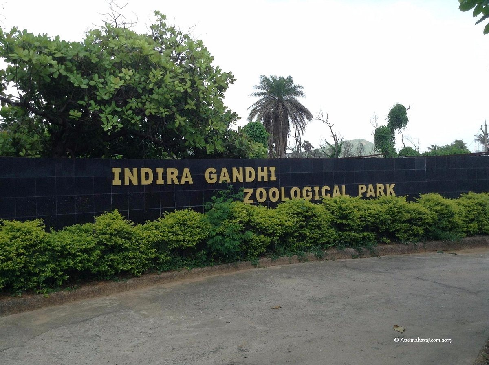

Indira Gandhi Zoological Park
Indira Gandhi Zoological Park is a large zoo located in Vizag, spread over an area of 625 acres. It is home to a variety of animal species, including lions, tigers, elephants, and birds. The zoo provides a great opportunity for wildlife enthusiasts and families to observe animals in a naturalistic environment.
Location: Visakhapatnam, Andhra Pradesh, India
Activities: Wildlife viewing, educational tours, photography
Transportation: Accessible by road, located near major bus routes.